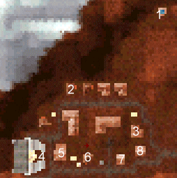

White Cap: Castle Stone City Map

| White Cap | |
| 1. | Well +10 to Level Temporarily |
| 2. | Quality Armor |
| 3. | Haft and Handle Pole Arms |
| 4. | Master Leather Armor (10 Skill 3,000 Gold) Lord Anthony Stone, Cleric Quest to become a Priest, the Quest to become a High Priest, and the Quest, to capture the Prince of thieves. Master Knife (10 Skill, 40 Speed, 5,000 Gold) |
| 5. | Master Disarm Training (7 Skill, 40 Accuracy, 2,500 Gold) |
| 6. | Rime and Reason Inn |
| 7. | Protective Services Membership 50 Gold |
| 6. | Repair Mastery (7 Skill, 40 Accuracy, 2,500 Gold) |
Leave us a message mgrounds@hotmail.com